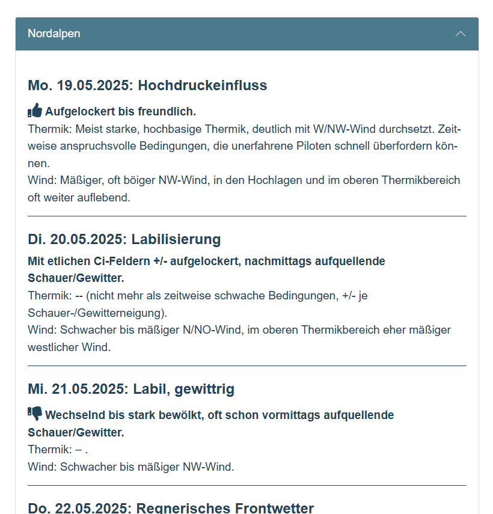
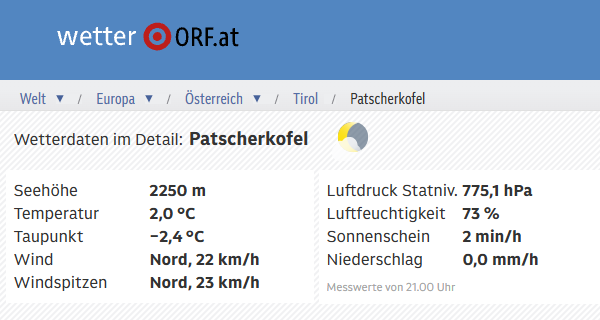
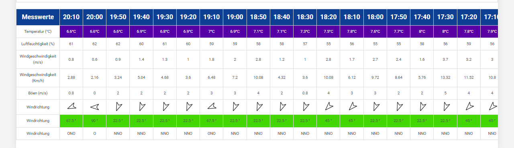
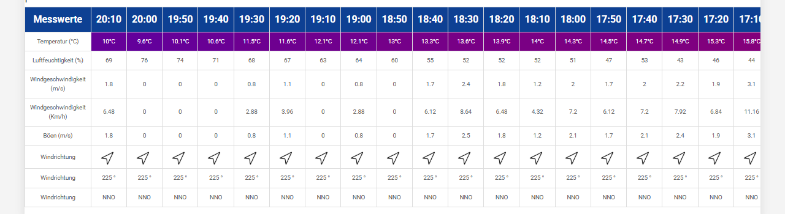

‚òÄÔ∏èüåà Wetter-Dashboard
Föhndiagramm & DHV Wetter
Patscherkofel
Elfer
Föhndiagramm & DHV Wetter
Quelle:
wetterring.at/profiwetter/foehndiagramm-tirol

Quelle:
www.dhv.de/wetter/dhv-wetter
Patscherkofel

Quelle:
wetter.orf.at/tirol/patscherkofel/
Elfer
Bergstation:
Quelle:
elferbahnen.alpindigital.at/bergstation.php
Startplatz 1:

Quelle:
elferbahnen.alpindigital.at/startplatz1.php
Landeplatz:

Quelle:
elferbahnen.alpindigital.at/landeplatz.php